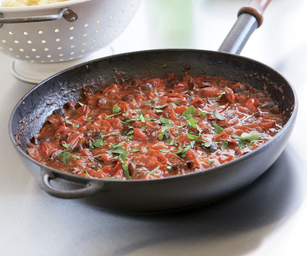

Back to Homepage

Description
Making a pizza but don't have any tomato sauce for the pizza? Or maybe you want a more artisenal twist on a pizza sauce? This grandma pie inspired pizza sauce could also be blended with an immersion blender to make a quick and easy pomodoro sauce for gnocci. This recipe renders about 3/4 of a cup of sauce, depending how much you reduce. This sauce not only tastes grate, but will leave your kitchen smelling like a Roman ristorante!
Ingredients
- 1/4 cup (4 Tbsp) of extra virgin olive oil (the good stuff)
- 3-4 cloves of finely minced garlic
- 4-6 leaves of fresh basil chopped or about a 2 tsp of dried
-
- Red pepper flake to taste, or fresh hot pepper to taste
- 1 tsp of oregano
- 1 tsp of sugar
- 1 1/2 pounds of tomatoes (plums are best)
- About a half 1 medium sized onion
- 2 Tbsp of chopped parsley
- Salt to taste
Steps
- In your heaviest and largest pan, add oil, basil, garlic, pepper to a pan over low heat. DO NOT BURN THE GARLIC PLEASE! Heat herbs until aromatic and garlic begins to simmer.
- Add onion and sugar. Raise the heat to medium and cook until translucent. DO NOT BURN THE GARLIC!
- Either quarter tomatoes and put into a food processor or roughly dice them. Add the tomatoes to the pan.
- Cook over medium heat until tomatoes break down and sauce reduces slightly. Add parsely.
- Add salt to taste, and serve on your homade pizza or over gnocci!
Return to top